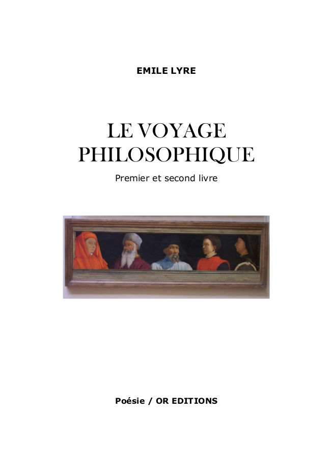

OR Editions
Home
Publications
Anatole Swadock, Trucs de bouse
Anatole Swadock, Petits poèmes géologiques
Emile Lyre, Le voyage philosophique
Emile Lyre - Le voyage philosophique
Al Zeituni, Quatrains
Emile Lyre, Journal de miniatures
Textes en français
Plaine
Prière
English Texts
Remembering My Friend
Empty Shelf
Coming Back From A Long Travel
Did They Forget?
How Could I?
What Remains Of Wise Men?
Teaching Equilibrium
Ode To The Whirling Player
The Imbalance Fixer
As It Is Supposed To Be
Prayer To My Friend
In The Eye Of A Child
Seeking Substance
What's Left
The Jewel
Truth
You Are
Waiting For Your Light
Come Closer
Cleansing Our Self
Water Flows
You Are Close
A propos
A propos
License
OR Editions
Docs
»
Publications »
Emile Lyre, Le voyage philosophique
Emile Lyre - Le voyage philosophique

Télécharger le PDF
« Previous
Next »